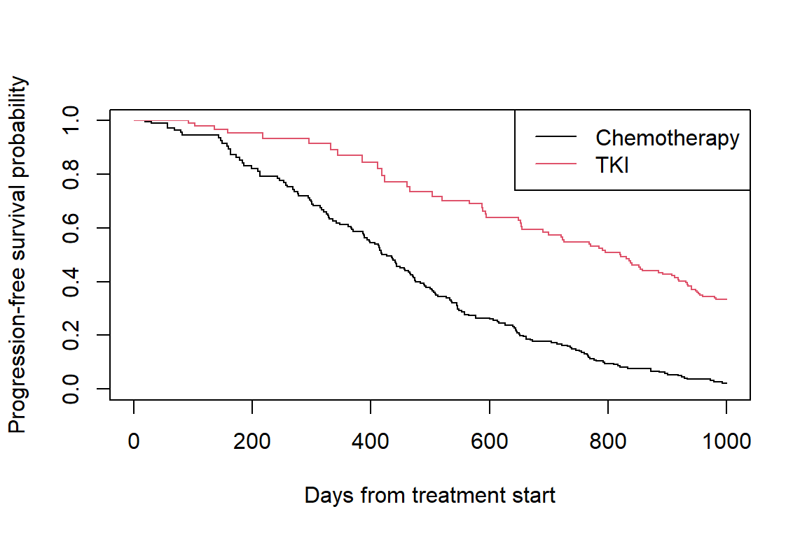

single-event-guided-example.RmdThis vignette demonstrates inverse probability of censoring weighting (IPCW) for a single-event survival outcome. We use a simulated dataset that mimics a clinical trial comparing two treatments (chemotherapy vs. TKI) on progression-free survival, where censoring is informative because it depends on an ancillary biomarker (W2).
The package ships with single_example_dat, a simulated dataset of 500 subjects generated with set.seed(20240429). The key variables are:
t: observed time (event or censoring)delta: event indicator (1 = event, 0 = censored)x: treatment (0 = chemotherapy, 1 = TKI)W2: ancillary biomarker that drives informative censoring
data(single_example_dat)
head(single_example_dat)
#> # A tibble: 6 x 5
#> S t delta x W2
#> <dbl> <dbl> <dbl> <int> <dbl>
#> 1 427. 427. 1 0 0.533
#> 2 1541. 1541. 1 1 0.986
#> 3 417. 417. 1 0 0.579
#> 4 1095. 327. 0 1 0.701
#> 5 108. 51.5 0 0 0.0469
#> 6 768. 768. 1 0 0.889The code below re-creates this dataset from scratch, so you can see exactly how it was generated.
# Fix simulation parameters
n <- 500
alpha <- 0.05
x_prop <- 0.5
a <- 2
sigma <- 500
beta <- log(0.25)
lambda <- 0.01
phi <- -5
set.seed(20240429)
Y1 <- rexp(n, rate = 1)
Y2 <- rexp(n, rate = 1)
Z <- rgamma(n, shape = alpha, rate = 1)
W1 <- (1 + Y1 / Z)^(-alpha)
W2 <- (1 + Y2 / Z)^(-alpha)
x <- rbinom(n, 1, prob = x_prop)
S <- sigma * (-log(1 - W1) / exp(beta * x))^(1 / a)
C <- rexp(n, rate = lambda * exp(phi * W2))
t <- pmin(S, C)
delta <- as.integer(S <= C)
single_example_dat <- tibble::tibble(S, t, delta, x, W2)get_ipcw_wgt() converts the wide dataset to counting-process (long) format and appends the unstabilized IPCW weight column wgt. The package also provides single_example_ipcw_dat with these weights pre-computed.
data(single_example_ipcw_dat)
head(single_example_ipcw_dat)
#> # A tibble: 6 x 11
#> id_nest true_time x W2 id tstart tstop delta censor inv_wgt wgt
#> <int> <dbl> <int> <dbl> <int> <dbl> <dbl> <dbl> <dbl> <dbl> <dbl>
#> 1 1 427. 0 0.533 1 0 0.688 0 0 1 1
#> 2 1 427. 0 0.533 1 0.688 1.28 0 0 0.999 1.00
#> 3 1 427. 0 0.533 1 1.28 2.77 0 0 0.999 1.00
#> 4 1 427. 0 0.533 1 2.77 5.15 0 0 0.998 1.00
#> 5 1 427. 0 0.533 1 5.15 5.79 0 0 0.997 1.00
#> 6 1 427. 0 0.533 1 5.79 6.18 0 0 0.997 1.00Alternatively, compute the weights directly:
dat_long <- get_ipcw_wgt(single_example_dat)The chunk below requires the ggsurvfit package. If it is not installed, you can plot the IPCW K-M curves with base R instead (see the commented code).
library(ggsurvfit)
km_fit2 <- survfit2(Surv(tstart, tstop, delta) ~ x,
data = single_example_ipcw_dat,
weights = single_example_ipcw_dat$wgt,
timefix = FALSE)
ggsurvfit(km_fit2) +
xlim(c(0, 1000)) +
scale_color_hue(labels = c("Chemotherapy", "TKI")) +
labs(
x = "Days from treatment start",
y = "Progression-free survival probability"
)
km_fit <- survfit(Surv(tstart, tstop, delta) ~ x,
data = single_example_ipcw_dat,
weights = wgt,
timefix = FALSE)
plot(km_fit, col = 1:2, xlim = c(0, 1000),
xlab = "Days from treatment start",
ylab = "Progression-free survival probability")
legend("topright", legend = c("Chemotherapy", "TKI"), col = 1:2, lty = 1)
ipcw_cox_fit <- coxph(
Surv(tstart, tstop, delta) ~ x + cluster(id),
data = single_example_ipcw_dat,
weights = single_example_ipcw_dat$wgt,
timefix = FALSE
)
summary(ipcw_cox_fit)$coef
#> coef exp(coef) se(coef) robust se z Pr(>|z|)
#> x -1.209459 0.2983585 0.1029929 0.162079 -7.462158 8.51167e-14Or use the convenience wrapper, which also returns the hazard ratio and robust-SE-based confidence interval:
get_ipcw_cox_fit(single_example_ipcw_dat, weight = "wgt")
#> # A tibble: 1 x 7
#> term log_hr log_hr_se log_hr_rob_se hr hr_ci_low hr_ci_high
#> <chr> <dbl> <dbl> <dbl> <dbl> <dbl> <dbl>
#> 1 x -1.21 0.103 0.162 0.298 0.217 0.410Bootstrap resampling is needed for valid confidence intervals because the weights are estimated. The code below runs 500 bootstrap samples; in practice you may want to run this in parallel.
set.seed(20240917)
B <- 500
ipcw_boot_dat <- map(1:B, ~ dplyr::slice_sample(single_example_dat,
prop = 1, replace = TRUE))
ipcw_boot_dat <- map(ipcw_boot_dat, get_ipcw_wgt)
ipcw_cox_boot <- map(ipcw_boot_dat, ~ get_ipcw_cox_fit(., "wgt"))
boot_log_hrs <- map_dbl(ipcw_cox_boot, "log_hr")
boot_pci <- get_boot_pci(data.frame(log_hr = boot_log_hrs))
result_tab <- data.frame(
Scale = c("log(HR)", "HR"),
Estimate = c(coef(ipcw_cox_fit), exp(coef(ipcw_cox_fit))),
Lower_95pct_PI = c(boot_pci[[1]], exp(boot_pci[[1]])),
Upper_95pct_PI = c(boot_pci[[2]], exp(boot_pci[[2]]))
)
print(round(result_tab[, -1], 2))